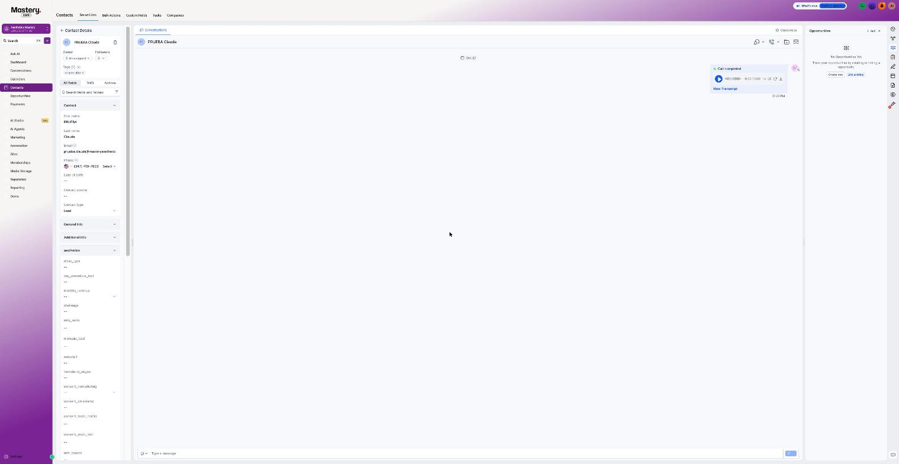
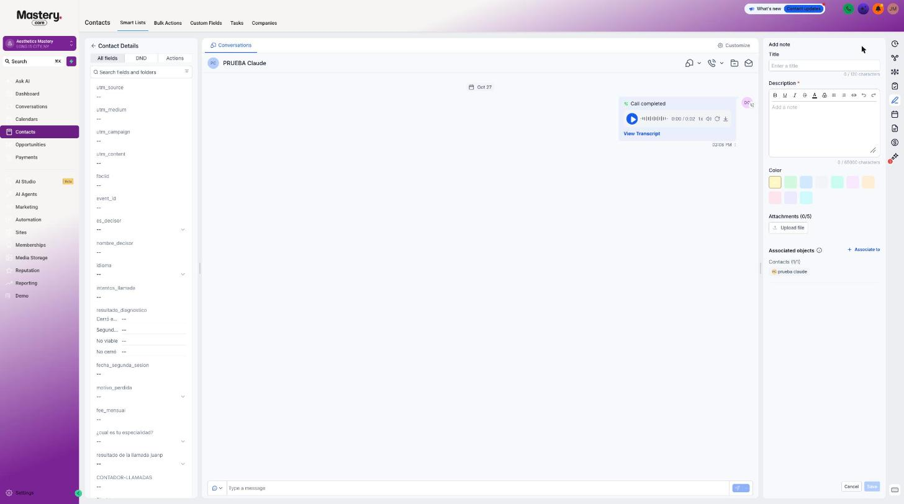
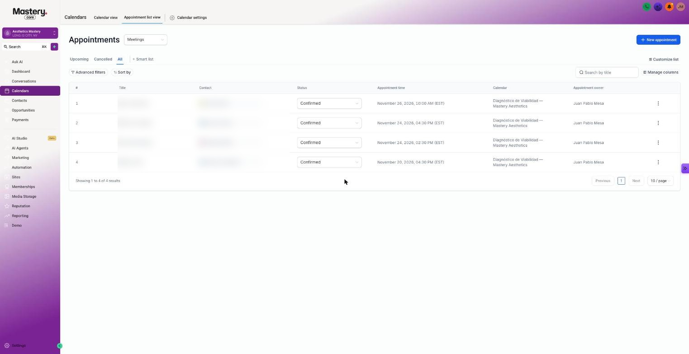
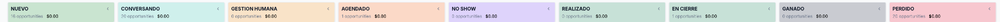
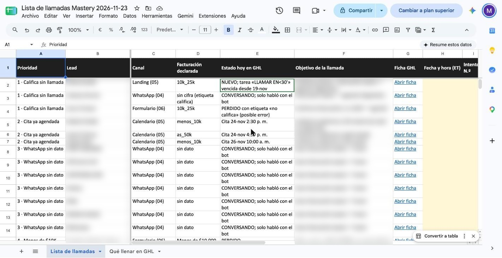
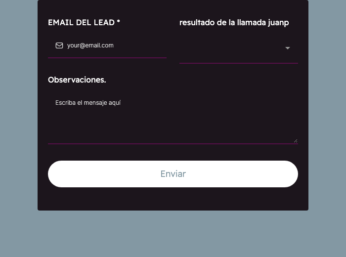
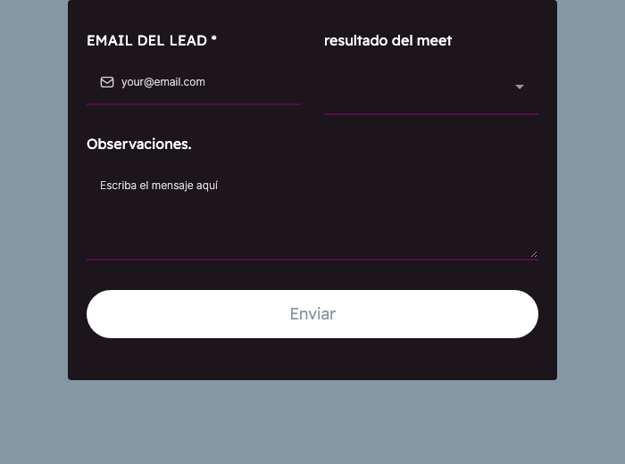

Guías de herramientas del Setter
Mastery Aesthetics · todos los horarios son hora del Este (ET). Cada guía corresponde a una obligación del día y abre la herramienta con su link directo.
1. Al arrancar: revisar chats y avisos desde ayer
GHL · Conversaciones
Link: https://app.gohighlevel.com/v2/location/CDWMBDDuWrhpV6P6QdqP/conversations/conversations
En la pantalla
- Menú Conversations → pestaña «Conversations».
- A la izquierda, la bandeja «Team inbox» con las vistas Unread, All, Recent y Starred.
- Al centro, el chat del lead; a la derecha, el panel «Activity» con el origen del lead (Source y Campaign).
Qué se hace ahí
Se lee cada chat del más antiguo al más reciente y se llama el mismo día. Solo se escribe por mensaje a quien marcó la casilla de mensajes, de 9:00 a. m. a 8:00 p. m. hora del lead.

2. Al arrancar: lista de trabajo del día (tareas de hoy y vencidas)
GHL · Tareas
Link: https://app.gohighlevel.com/v2/location/CDWMBDDuWrhpV6P6QdqP/tasks
En la pantalla
- Menú Contacts → pestaña «Tasks».
- Vistas All, Due today, Overdue y Upcoming.
- Columnas: Status, Title, Description, Associated Contacts, Assignee y Due Date (EST). Filtro «Assignee» arriba a la izquierda.
Qué se hace ahí
Filtros «Due today» y «Overdue», asignadas a ti. Cada tarea se completa con su nota; nunca se borra.

3. Triage de cada lead y notas
GHL · Contactos (ficha del lead)
Link: https://app.gohighlevel.com/v2/location/CDWMBDDuWrhpV6P6QdqP/contacts/smart_list/All
En la pantalla
- Ficha del contacto: arriba Owner, Followers y Tags; debajo las pestañas All fields, DND y Actions.
- En All fields están los campos del lead, entre ellos intentos_llamada, resultado_diagnostico, fecha_segunda_sesion y motivo_perdida.
- Nota: ícono del lápiz (Notes) en la barra derecha → «Add». El formulario «Add note» tiene Title, Description (obligatoria), Color, Attachments y el contacto asociado; se guarda con «Save».
Qué se hace ahí
Nota con iniciales, tema, qué escribió, intento y resultado; «PENDIENTE — …» cuando falta algo. Antes de marcar, revisar la hora del lead (el campo del huso horario está por confirmar en pantalla).



4. Llamar (lead nuevo antes de 30 min, intentos 1, 2, 5 y 10, confirmaciones, no-show)
App LeadConnector (celular) con el número de Mastery +1 551-319-1344
Link: iPhone: https://apps.apple.com/us/app/lead-connector/id1564302502 · Android: https://play.google.com/store/apps/details?id=com.LeadConnector
En la pantalla
- En el computador, la llamada sale del ícono del teléfono en la barra de la conversación del contacto.
Qué se hace ahí
Se llama desde la ficha del contacto para que la llamada quede registrada. Al colgar: disposición personalizada «Contactado» solo si el lead habló (buzón de voz o sin respuesta = sin disposición) + nota. La disposición «Contactado» corta la serie de llamadas.

5. Registrar el resultado de la llamada
GHL · Tareas, tarea «Registrar resultado de la llamada»
Link: https://app.gohighlevel.com/v2/location/CDWMBDDuWrhpV6P6QdqP/tasks
En la pantalla
- Ícono de Tasks en la barra derecha de la ficha → «Add task».
- Formulario: Title (obligatorio), descripción, Due date and time (EST), Setup recurring tasks, Assign to y el contacto asociado; se guarda con «Create».
Qué se hace ahí
Se completa con la cita agendada (fila 6) o con el motivo de pérdida (`motivo_perdida`) en el contacto. Si la tarea no aparece después de marcar «Contactado», el Setter la crea él mismo desde la app con el título exacto «Registrar resultado de la llamada — [nombre del contacto]» y la completa (plan B del Flujo CRM); con otro título la serie de llamadas no se corta.

6. Agendar, mover o revisar diagnósticos
GHL · Calendarios, vista semana (filtrar por el calendario «Diagnóstico de Viabilidad»)
Link: https://app.gohighlevel.com/v2/location/CDWMBDDuWrhpV6P6QdqP/calendars/view
En la pantalla
- Menú Calendars → «Calendar view», «Week view»; en «Manage view» se filtra por usuario y por calendario.
- Desde la ficha: ícono de Appointments → «Add Appointment» → «Meetings» abre «Book appointment».
- En «Book appointment»: Calendar «Diagnóstico de Viabilidad — Mastery Aesthetics», Appointment title, Team member, Date & time (zona de la cuenta GMT-05:00 America/New_York) y, abajo, Status. El Status arranca en «Confirmed»: revisarlo antes de «Book appointment».
Qué se hace ahí
Cita creada o movida en el momento, con nota. Aviso mínimo de 24 h; máximo 6 diagnósticos por día.


7. Ver la lista de citas (de hoy, de mañana, canceladas)
GHL · Lista de citas
Link: https://app.gohighlevel.com/v2/location/CDWMBDDuWrhpV6P6QdqP/calendars/appointments
En la pantalla
- Menú Calendars → «Appointment list view».
- Vistas Upcoming, Cancelled y All. Columnas: Title, Contact, Status, Appointment time, Calendar y Appointment owner.
Qué se hace ahí
Solo lectura para la confirmación de la tarde; los cambios se hacen en el calendario (fila 6).

8. Mandar al lead el link para que elija su horario
Link de reserva del diagnóstico
Link: https://api.leadconnectorhq.com/widget/booking/gqhLdSFlvFze3TsvmW5V
En la pantalla
- Página «Diagnóstico de Viabilidad — Mastery Aesthetics», 30 min.
- El lead llena Nombre Completo, Teléfono, Gmail, Código postal y ¿Cuanto facturas al mes? (todos obligatorios) y elige su horario.
Qué se hace ahí
Lo llena el lead. Se usa solo cuando el lead prefiere elegir él mismo.

9. Mover cada oportunidad de etapa (Guía 06, sección 4b)
GHL · Oportunidades, pipeline «aestetycks»
Link: https://app.gohighlevel.com/v2/location/CDWMBDDuWrhpV6P6QdqP/opportunities
En la pantalla
- Menú Opportunities → pipeline «aestetycks».
- Etapas en orden: NUEVO · CONVERSANDO · GESTION HUMANA · AGENDADO · NO SHOW · REALIZADO · EN CIERRE · GANADO · PERDIDO.
Qué se hace ahí
Etapa según la tabla 4b (Conversando, Gestión Humana, Agendado, No Show, Perdido con su motivo). Realizado, En Cierre y Ganado los mueve Juan Pablo Mesa.


10. Revisar los Perdidos por «no califica» sin nota de llamada (orden del día, punto 7)
GHL · Oportunidades, etapa Perdido
Link: https://app.gohighlevel.com/v2/location/CDWMBDDuWrhpV6P6QdqP/opportunities
En la pantalla
- En el pipeline «aestetycks», la columna PERDIDO es la última a la derecha: se desplaza el tablero hacia la derecha.
Qué se hace ahí
Abrir la columna Perdido, revisar el motivo de cada uno y llamar con el speech 01 a los que no tengan nota de llamada.

11. Lead que pide no ser llamado
GHL · Contactos (ficha del lead)
Link: https://app.gohighlevel.com/v2/location/CDWMBDDuWrhpV6P6QdqP/contacts/smart_list/All
En la pantalla
- Ficha del contacto → pestaña «DND».
- Opciones: «DND All Channels» o por canal: Email, Text Messages, Calls & voicemail, WhatsApp e Inbound Calls and SMS. Para no llamar más: «Calls & voicemail».
Qué se hace ahí
Nota «No llamar más — lo pidió el [fecha]» y llamadas bloqueadas (DND de llamadas) en el contacto.

12. Lista de llamadas de reactivación (leads anteriores por prioridad)
Google Sheets · Lista de llamadas Mastery 23-nov
Link: https://docs.google.com/spreadsheets/d/1Ce3jks9jIeAlLUFNl4NicvAyrf8PomYTHHN6AFLECdE
En la pantalla
- Hojas «Lista de llamadas» y «Qué llenar en GHL».
- Columnas grises con el dato del lead (Prioridad, Lead, Canal, Facturación declarada, Estado hoy en GHL, Objetivo de la llamada, Ficha GHL con «Abrir ficha») y, desde la columna H, las amarillas que llena el Setter.
- La columna «Objetivo de la llamada» se actualizó el 25-nov a la regla vigente: cualquier facturación mayor a $0 se agenda; solo $0 va a Perdido con «no califica: sin facturación». En la captura está tapada porque es anterior al cambio.
Qué se hace ahí
Hoja «Lista de llamadas», columnas amarillas: Fecha y hora (ET), Intento N.º, ¿Contestó?, ¿Habló con quien decide?, Facturación exacta dicha, Resultado, Fecha de la cita, Disposición marcada, Nota dejada en GHL, Siguiente paso. La hoja «Qué llenar en GHL» explica lo que se registra en la ficha.

16. Después de cada llamada contestada: resultado de la llamada (formulario de Diana)
GHL · Formulario «backend llamada juap»
Link: https://api.leadconnectorhq.com/widget/form/XIoK87GyHk2QXpqt3NXK
En la pantalla
- Campos: EMAIL DEL LEAD (obligatorio), «resultado de la llamada juanp» y Observaciones; botón «Enviar».
- Opciones del resultado: enviar contrato, no le interesa, sigue en conversación telefónica y agendó meet (vistas en el formulario el 25-nov).
Qué se hace ahí
Correo del lead, resultado (agendó meet / no le interesa / sigue en conversación telefónica; «enviar contrato» solo cuando Juan Pablo Mesa lo indique: según el manual del CRM, esa opción manda el contrato de inmediato y pasa la oportunidad a En cierre) y observaciones. Según el manual del CRM, al enviarlo la oportunidad pasa a Gestión humana y el lead sale de la secuencia de mensajes.

17. Después de cada diagnóstico: resultado del meet (formulario de Diana)
GHL · Formulario «backend meet juap»
Link: https://api.leadconnectorhq.com/widget/form/wBv3iPCoZFgpkg0gQzyD
En la pantalla
- Campos: EMAIL DEL LEAD (obligatorio), «resultado del meet» y Observaciones; botón «Enviar».
- Opciones del resultado: no asistió, sí asistió y firma contrato, sigue en gestión humana y reagendó (vistas en el formulario el 25-nov).
Qué se hace ahí
Correo del lead, el resultado que confirma Juan Pablo Mesa (no asistió / sí asistió y firma contrato / sigue en gestión humana / reagendó) y observaciones. Qué hace GHL al enviarlo: por confirmar con Diana.
